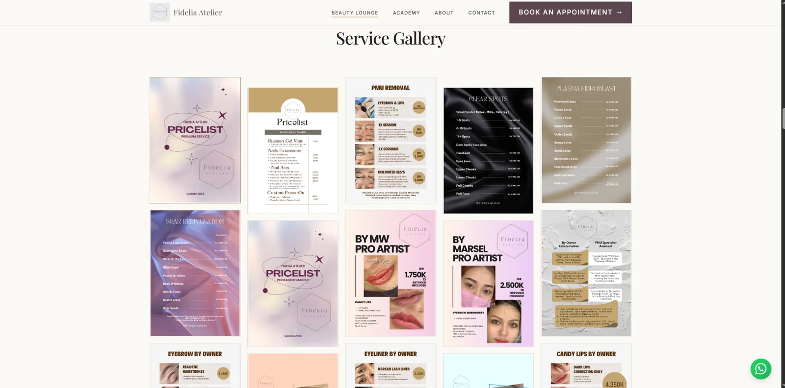
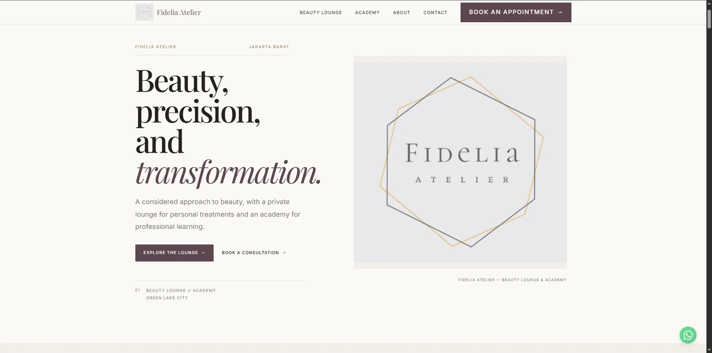

PROJECT 001 / 004
CLIENT WEBSITE / IN PROGRESS


BRANDING / WEB DEVELOPMENT / CLIENT WORK
Fidelia Atelier.
Turning a beauty business brief into an elegant web presence—covering its services, academy, gallery, and contact information. Direction approved; implementation ongoing.